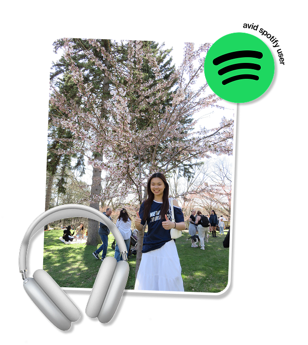

stephy's
music rotation
and I love music! my friends would
call me musically inclined...



hi! my name is Stephy, and I am a current 2nd year global business &
digital arts student (gbda) at the University of Waterloo.
for this assignment, I thought about what I love most and
calms me down is music! generic answer... but I truly always
run towards music in whatever scenario I may be in.
Going to concerts and living in the moment is what I love most about music.
Qualifications: the most minutes I had for Spotify Wrapped is 114k minutes!!